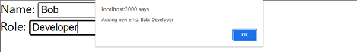
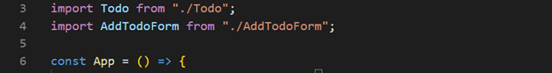

In this blog post, I will show you how to create a To-do app in React with the concepts that I showed from the first blog post (Add the first blog1 link here) as well as new concepts that will be explained later on.
In this To-do app, you will be able to create, display, update, and delete todo items. These features will use the “useState()†hook to keep track of changes to the todo list. There will also be dynamic styles used based on whether a todo item is done or not done.
While writing the different features of the todo app, there will be multiple components created for better readability instead of creating just a single component (App component) with everything inside of it.
New concepts that will be learned:
🔹 Using the map function on an array to display items
🔹 Using a form in React and handling the form submit
🔹 Adding a new item to an array state variable
🔹 Modifying an item in an array state variable
🔹 Deleting an item in an array state variable
These concepts will be explained in this blog post as you read through.
1. Create the react app by opening a terminal an entering this command:
npx create-react-app todo-list
2. Open the folder “todo-list” in your code editor (e.g. in VS Code)
3. To start running the app, open a terminal and run this command:
npm start
We will add basic styling so that our app displays the todo items in a simple and friendly way.
4. Open App.css and change the contents to the css below. This styling is basic styling used for creating a background for the app, and styling for each todo item:
5. Open App.jsx and change the contents to the following code below.
This code creates a state variable called “todos†that will store the data for all the todo items in an array. In the useState there are three todo items which are being used as fake data so that we can start showing todo items.
Remember from the first blog post, that “useState()†will remember its current value when rendering for achieving an interactive user experience.
So far, this is what the app will look like in the browser, no todo items displayed yet!
6. Use the map() function with the “todos†array to display the todo items
New concept: Using the map function on an array to display items
In React, one way to show multiple items from an array in the app is
to use the “map()” function. See this example and then see the
explanation below

• First of all, the example above creates an array called “data†with the useState() hook and that array contains items with objects like “{ id: …, name: “...”, role: “...”}”
• Then, on line 11, the “map()†function is used on the “data†array with an arrow function inside the round brackets like: “(emp) => (…)”
• The map() function will loop through each item in the “data†array and call the arrow function each time. The result for each item is inside the round brackets after => which is “<div> … </div>”
• “emp†is a parameter for an item from the “data†array. The name can be changed to whatever you want. For example, the first time the map() function loops, emp will be the value “{ id: 10, name: “Alex”, role: “Developer†}”
• To show data from the “emp†parameter, use curly brackets “{emp.fieldName}†like in the example “{emp.name}†and “{emp.role}”
Back to the todo app…
Now, update the code in the return ( … ) part of the App.jsx file:

In this step, we used “todos.map((todo, index) => ( ... ))†to display each todo in the “todos†array by looping through each todo item to create a div with the todo text inside.
New concept: “key†attribute in components / JSX elements
Also, we set “key={index}†because React requires that JSX elements that are directly inside of “map(...)†have a “key”. As a reminder, “JSX elements†include tags like “<div>†or components like “<Component />”. React uses the “key†to correctly update the app when items are moved around, inserted, or deleted. The key should be unique for an element, such as a unique “id†in data. In our todo app, our todos do not have an id, so we used the index as the key.
The app should look like this now:

7. Splitting up the code: We can make the App component smaller by creating a Todo component in a separate file and using it in the App component like “<Todo … />”. See below for the changes to the code
Making the code for each component smaller is helpful to understand each component more easily, without as many details to process at one time
In new file Todo.jsx in src/ folder:
In App.jsx, import the new Todo component:
Then in App.jsx, use the Todo component in the map() function:
This step will not change how the app is displayed in the browser, so let's move on to the next part.
In this part, you will learn how to add new todo items in your app. To start out, you will learn about how to add items to an array that was created with “useState()”:
New concept: Adding a new item to an array state variable
In React, state variables are set using the “setNAME()” function from
the useState() line: “const [NAME, setNAME] = useState(…);”. However,
to add an item to an array state variable, the original array must be
copied, then the copied array can be modified. See the code and
explanations below:

• First of all, the example above creates an array called “data†with the useState() hook and that array contains items with objects like “{ id: …, name: “...”, role: “...”}”
• Then, on line 10, we defined an “onAddData†function where there is one parameter “newEmpData†which should have the data for an emp including “id”, “name”, and “role”.
• On line 11, the original “data†array is copied using the spread operator (the dot-dot-dot …) inside of square brackets.
• On line 12, we add the “newEmpData†object to the copied array “newData”
• On line 13, we use “setData(...)†to update the data array so that the next time the app render it will show the list including the newest item.
• Finally, you can see an example of calling the “onAddData†function which could be used when submitting a form to add a new employee.
8. In the App.jsx file, we will add a function “onAddTodo†that will have a parameter “todoData†that will be added as a new todo item:
9. We also will be creating a new component called AddTodoForm that will take input for a new todo item. This will use a <form>, so we will first learn about how to use form in React to handle form submitting:
New concept: Using a form in React and handling the form submit
In React, a <form> can be used to add new data to an app. There are several parts including handling onSubmit, preventDefault(), and controlling inputs that will be discussed below:
• First of all, the example above creates an object called “empData†with the useState() hook with the fields “name†and “role”
• Then, on line 6, we defined aa “handleSubmit†function where there is one parameter “e†for the event that called the “handleSubmit†function.
• On line 7 we used “e.preventDefault()†to stop the browser from refreshing the page after submitting
• On line 8, there is validation to make sure that the name and role are not empty.
• On line 9, we print a message to the browser. This is where the new data could be added to a backend, or to an array of employees.
• On line 10, the “empData†state variable is reset back to being empty
• On lines 17 and 23, we are controlling the value of the inputs depending on the current values in empData. This is what lets us clear the inputs after the form is submitted.
• On Lines 18 and 24, we are using the onChange attribute to update the name and role in the “empData†state variable.
Here is the result after submitting: 
Back to the todo app…
9. (continued) This new component will also use “useState()†to keep track of what the user typed in and then will handle the form submit (e.g. when the user presses the "enter†key in the form, or when the submit button is clicked). It will also check that the “text†for the new todo item is not empty.
In a new file "AddTodoForm.jsx" in src/ folder add the following code:

Then, add this new AddTodoForm component to your App component and pass the onAddTodo function to the AddTodoForm component
In App.jsx, import the new AddTodoForm component: 
In App.jsx, use the AddTodoForm component:

Open your application in a web browser. You should be able to see the
original todo list items from the fake data and now a form at the top
that allows you to add a new todo item:

Now that you can create todo items, we will move on to being able to update items to being completed, and then showing them in a separate “completed†todo list.
10. It's time to allow completing items to move then to the “completed†section of the todo app. First, we will add more data to the todos array in the App component:
New concept: Updating an item in an array state variable
In React, when updating items in an array state variable, we still start by copying the original array, then modifying the item that we want to modify by creating an copy of that item. See the code and explanations below:
• First of all, the example above creates an array called “data†with the useState() hook and that array contains items with objects like “{ id: …, name: “...”, role: “...”}”
• Then, on line 10, we defined an “onUpdateData†function where there is one parameter “emp†which should have the data for an emp including “id”, “name”, and “role”, and two more parameters for “newName†and “newRole†to update those fields for the specific emp.
• On line 11, the original “data†array is copied using the spread operator (the dot-dot-dot …) inside of square brackets.
• On line 12, we get the index (position in the array) for the “emp†and change that array item to be a copy of the emp data by using “…emp”. Also, the name and role are updated to be the values in newName and newRole.
• On line 13, we use “setData(...)†to update the data array so that the next time the app render it will show the list including the updated item.
• Finally, you can see an example of calling the “onUpdateData†function which could be used when submitting a form to edit users
Back to the todo app…
10. (continued) Secondly, we will create a function “onDone”
that will set a todo item to be done and it will set the completed
date for that item to be the current date:

Next, create a section for “Completed Todos”, and then start filtering the “Todos†and “Completed Todos†section by todos that are completed or not. Todos that are completed (isDone === true) should go into the “Completed Todos†section. Otherwise (isDone === false), they should go into the “Todos†section. Also, pass the “onDone†function to the Todo component in the return part of App.jsx. We will add the code tor the Todo component soon:
Finally, update the Todo component code to include the “onDone†function as a prop, to show the completed date (if it is defined), and to show the “Complete†button if the todo is not completed:
All these changes will look like this in the browser (I completed a
task to show it below):

Finally, being able to delete todo items that have already been completed will help to increase a user's focus on important things in the app. This will involve learning one more concept to deleting items from an array state variable:
New concept: Deleting an item in an array state variable
In React, when deleting items in an array state variable, we still start by copying the original array, then removing that item from the copied array. See the code and explanations below:
• First of all, the example above creates an array called “data†with the useState() hook and that array contains items with objects like “{ id: …, name: “...”, role: “...”}”
• Then, on line 10, we defined an “onDeleteData†function where there is one parameter “emp†which should be the item that we want to delete from “data”.
• On line 11, the original “data†array is copied using the spread operator (the dot-dot-dot …) inside of square brackets.
• On line 12, we get the index (position in the array) for the “emp†and using the “splice()†function, it will remove the item at that position. The second parameter “1†means only one item should be removed.
• On line 13, we use “setData(...)†to update the data array so that the next time the app render it will show the list including the updated item.
• Finally, you can see an example of calling the “onDeleteData†function which could be used when clicking a button to delete a user
Back to the todo app…
11. Now we will create a function “onDelete” that will delete a todo
item from the “todos” array. Also, we will pass the “onDelete”
function to the Todo component:

Finally, in the Todo component we will use the “onDelete” function and
show a “Delete” button if the todo is already completed/done:

Open your application in a web browser. There will be three to-do
items displayed. There will also be a delete button for removing
completed to-do items. I have completed one of the todo items to show
the different state:

And that's all it takes to create a simple todo app in React! I hope you learned a lot from this tutorial.
This is a demonstration video!